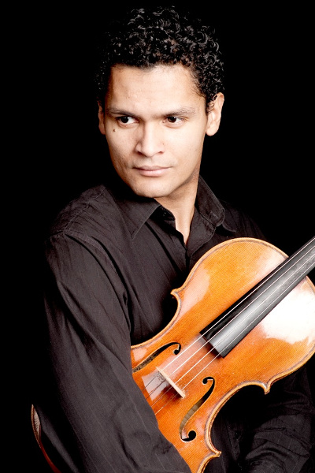

Julio López (Honduras)

Violista graduado de la Escuela de Música Victoriano López, la Universidad de Sur de Misissipi (USA) y graduado con alta distinción de la Academia de Música de Freiburg, Alemania.
Sus Maestros fueron Rubén Moncada (Chile), Michael Kimber (USA) y Wolfram Cristo (Alemania) este último principal de la Filarmónica de Berlín por más de treita años.
Julio López recibió clases con renombrados Maestro, como ser: Roberto Díaz, Hartmut Rohde, Walter Küssner, Csaba Erdelyi, Yuri Gandelsman y Alexander Brussulovsky.
Ganador del concurso William T. Award-en Hattiesburg, Mississippi y galardonado con el 1er premio en el Concurso Internacional Villa de Llanes en Asturias, España.
Como solista, Julio ha actuado con la Orquesta de Cámara USM (USA), la Orquesta Juvenil del Ecuador y con la Orquesta de Cámara de San Pedro Sula de la cual fué principal de las violas.
Después de trabajar en la Orquesta Gewandhaus de Leipzig, Julio es desde el 2007 miembro de la Orquesta Filarmónica de Munich y forma parte junto a otros tres violistas de la Filarmónica del famoso cuarteto "Tertis Viola Ensemble".
Sus Maestros fueron Rubén Moncada (Chile), Michael Kimber (USA) y Wolfram Cristo (Alemania) este último principal de la Filarmónica de Berlín por más de treita años.
Julio López recibió clases con renombrados Maestro, como ser: Roberto Díaz, Hartmut Rohde, Walter Küssner, Csaba Erdelyi, Yuri Gandelsman y Alexander Brussulovsky.
Ganador del concurso William T. Award-en Hattiesburg, Mississippi y galardonado con el 1er premio en el Concurso Internacional Villa de Llanes en Asturias, España.
Como solista, Julio ha actuado con la Orquesta de Cámara USM (USA), la Orquesta Juvenil del Ecuador y con la Orquesta de Cámara de San Pedro Sula de la cual fué principal de las violas.
Después de trabajar en la Orquesta Gewandhaus de Leipzig, Julio es desde el 2007 miembro de la Orquesta Filarmónica de Munich y forma parte junto a otros tres violistas de la Filarmónica del famoso cuarteto "Tertis Viola Ensemble".